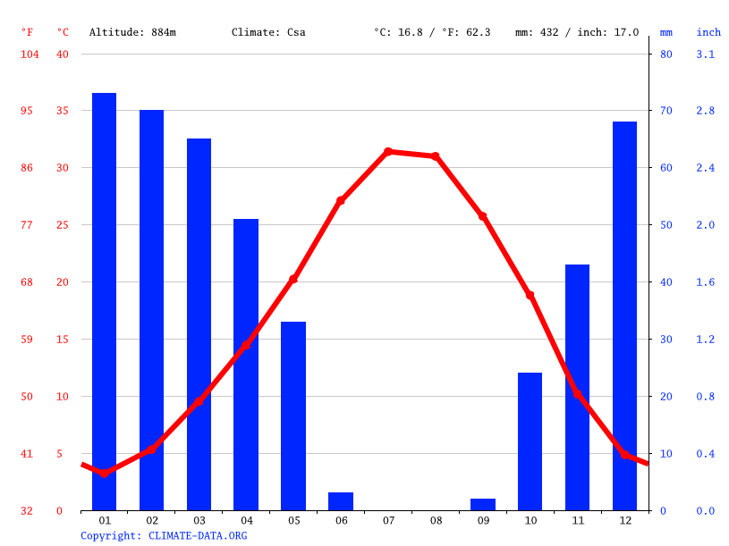

İklim
İl genelinde karasal iklim özellikleri görülmektedir. Kış ayları soğuk geçmektedir. Yaz aylarında güneyden gelen çöl iklimi etkisi altında olduğu için kurak geçer. İlde ölçülen en yüksek sıcaklık 42,5 °C'dir (31 Temmuz 2000). İlde ayrıca Türkiye sıcaklık rekoru kırılmıştır (48,8 °C Mardin, Kızıltepe). İlde ölçülen en düşük sıcaklık -14,0 °C'dir (22 Şubat 1985). Ayrıca bölge ilkbahar yaz gibi çöllerden gelen toz taşınımı etkisi altına girer. Derik, Nusaybin ve Savur ilçelerinde Akdeniz iklimi özellikleri de görülür. Ortalama en yüksek sıcaklık 34,9 °C ile temmuz ayında, ortalama en düşük sıcaklık 0.5 °C ile ocak ayında görülür.

Mardin İklim Verileri.